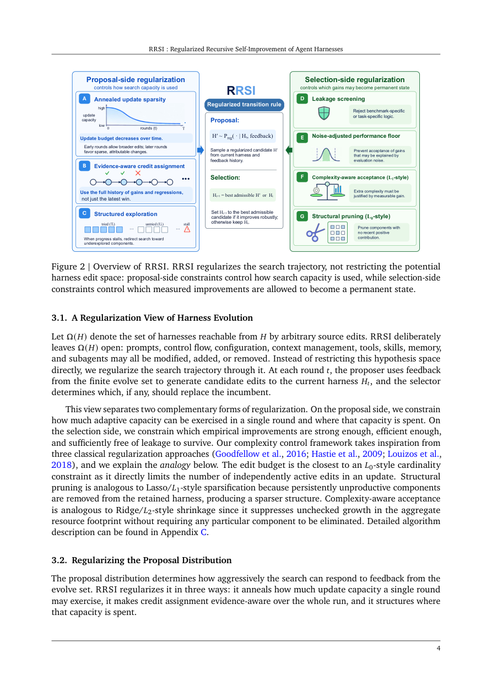

#1
★ 8/10
RRSI: Regularized Recursive Self-Improvement of Agent Harnesses
RRSI: Regularized Recursive Self-Improvement of Agent Harnesses

图 Figure · Page 4 of paper
🎯 （AI 中文深度分析暂不可用：Anthropic API 额度不足。英文栏为论文原文摘要，下方链接均可正常访问。）
An LLM agent's capability is largely magnified by its harness, namely the prompts, control flow, tooling, memory, and context management surrounding the frozen backbone model
| 维度 | 中文 | English |
|---|---|---|
| ❓ 待解决 的问题 |
（AI 中文深度分析暂不可用：Anthropic API 额度不足。英文栏为论文原文摘要，下方链接均可正常访问。） | An LLM agent's capability is largely magnified by its harness, namely the prompts, control flow, tooling, memory, and context management surrounding the frozen backbone model. Recent methods increasingly automate this process by iteratively proposing and selecting component-wise edits of an agent harness, practically establishing a form of recursive self-improvement (RSI) at the agent-system level. However, such recursive evolution may overfit by memorizing the training tasks, showing large in-distribution gains that shrink or even vanish on out-of-distribution benchmarks. We introduce Regularized Recursive Self-Improvement of Agent Harnesses (RRSI), which incorporates the principles of regularizations into harness self-improvement by constraining the evolution candidate proposal and selection. The proposer operates with a temporally annealed budget, limiting how many edits a candidate can bundle, and it encourages unexplored trajectories based on evolution history. The selector is equipped with a critic and a pruner: the critic screens benchmark-specific proposals, while the pruner, removes changes that are too small, too expensive, or no longer useful. Together these constraints favor reusable agent mechanisms over benchmark-specific ones or even noises. Across eight benchmarks spanning coding, agentic workspace and engineering design tasks, RRSI gains up to 14.1 points on the split it evolves against and up to 4.7 points on the five out-of-distribution benchmarks, while producing a harness that runs on 30% fewer policy tokens than the unregularized evolution. Code is available at https://github.com/google-research/rrsi and project page is https://regularized-rsi.com/. |
| 💡 解决 的亮点 |
（AI 中文深度分析暂不可用：Anthropic API 额度不足。英文栏为论文原文摘要，下方链接均可正常访问。） | See the paper’s original abstract in the "Problem / 背景" row above. |
| 🧪 实验 内容 |
（AI 中文深度分析暂不可用：Anthropic API 额度不足。英文栏为论文原文摘要，下方链接均可正常访问。） | See the paper’s original abstract in the "Problem / 背景" row above. |
| 📊 实验 结果 |
（AI 中文深度分析暂不可用：Anthropic API 额度不足。英文栏为论文原文摘要，下方链接均可正常访问。） | See the paper’s original abstract in the "Problem / 背景" row above. |
| 🏁 结论 | （AI 中文深度分析暂不可用：Anthropic API 额度不足。英文栏为论文原文摘要，下方链接均可正常访问。） | See the paper’s original abstract in the "Problem / 背景" row above. |
| 🔗 论文 链接 |
arXiv: 2609.24972v1 · 📥 PDF | |
⚙️ Method · 方法详解
（AI 中文深度分析暂不可用：Anthropic API 额度不足。英文栏为论文原文摘要，下方链接均可正常访问。）
See the paper’s original abstract in the "Problem / 背景" row above.
🌟 Why It Matters · 为什么重要
（AI 中文深度分析暂不可用：Anthropic API 额度不足。英文栏为论文原文摘要，下方链接均可正常访问。）
See the paper’s original abstract in the "Problem / 背景" row above.